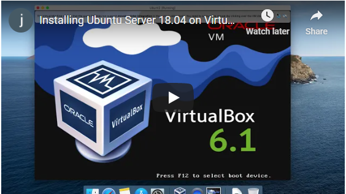
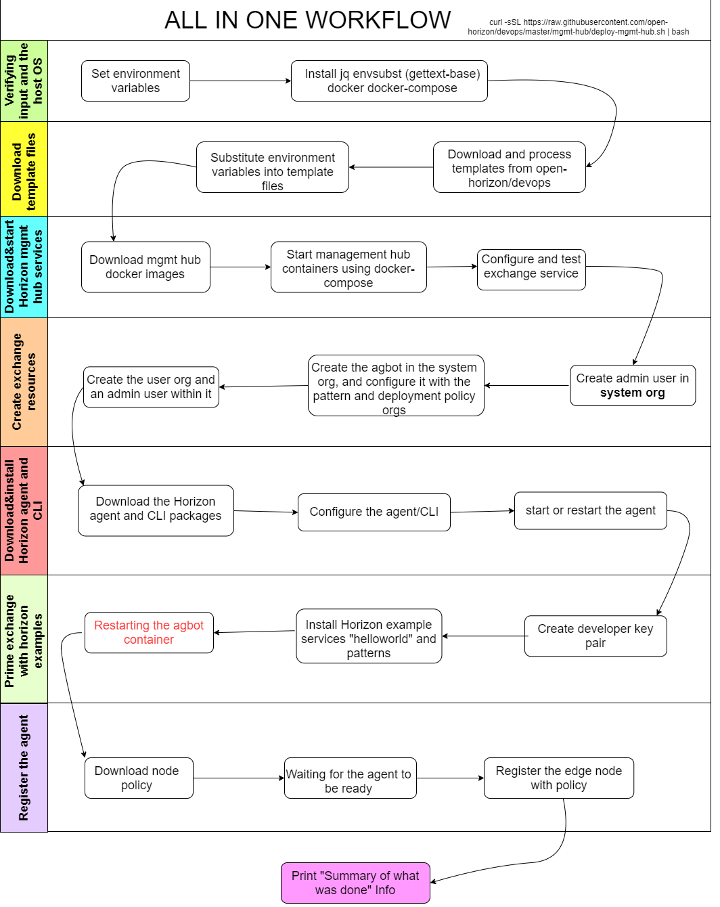

单机虚拟环境(VM)搭建
准备
要在一个虚拟机中同时运行Open Horizon管理中心(Management Hub)，代理(Agent), 命令工具(CLI)和Intel SDO (Secure Device Onboard)集成版，您需要一个符合以下要求的虚拟机(VM)：
- 大于等于4GB内存
- 至少20GB储存空间
- Ubuntu Server 18.04 LTS
观看安装视频Video

视频中提到的相关链接:
- Ubuntu Server 18.04 LTS for AMD64
- VirtualBox 6.1
- Open Horizon Management Hub installation instructions
- Open Horizon project
安装
要在一个VM里安装所有服务的简单且易于开发的版本，请在Ubuntu 18.04的x86_64计算机上切换为root身份：
sudo -i
运行以下指令:
curl -sSL https://raw.githubusercontent.com/open-horizon/devops/master/mgmt-hub/deploy-mgmt-hub.sh | bash
工作流程
